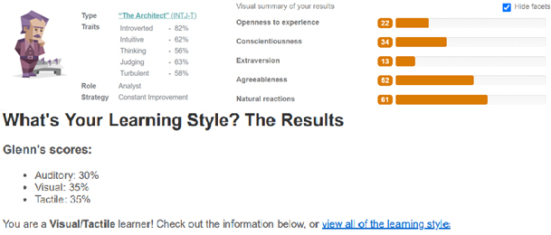
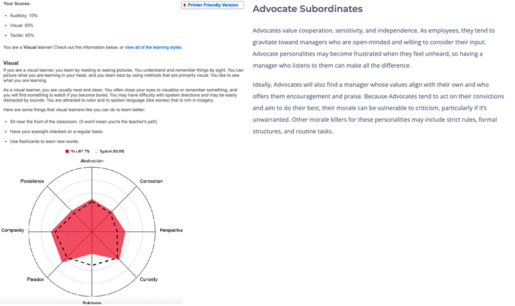

Aden Stokes
Student number: s3875764
I am 26 years old and I live in Penrith NSW. I have a Partner and 2 children, one daughter, aged 3 years old and one on the way. We also have a pug named Kylo who is 1 year old. I work as a chef at a local café.
Hobbies
In my spare time I collect, paint and play Warhammer 40k and game on PC and on PS4. An interesting fact about myself is that I played guitar in a band from when I was 18 until the start of this year, I have travelled around Australia twice, playing gigs and even once touring with an international band.
Interest in IT
My interest in IT comes from playing video games at a young age. I've always had an interest in technology as entertainment and I think that IT is an important thing to learn.
IT Experience
I have beginner to intermediate programming skills, I have experience in using JavaScript, HTML and CSS. I have also used the game engine Unity to being progress on my personal project idea.
Team Profile
My personality type is Turbulent Logician or INTP-T; Introverted, Intuitive, Thinking and Prospecting. This means that I am innovative, resourceful, and hardworking which I think couples well with my learning type, Kinesthetic which is a hands-on, learning by doing way or learning. While being introverted I can work strongly in a team through communication and effort. I am also a big believer of having fun while working with in a team, my ideal team would be able to get along and have a laugh and at the same time, knuckle down and work hard.
Ideal Job:UI Designer
UI design is the design and engineering of the User Interface, using graphic design and typography for aesthetics and usability which must also be balanced with functionality. I have personally been interested in things that lean towards creativity, I was in bands for 7 years and I paint in my spare time. I feel that I will be able to perform strongly in a UI design role using my knowledge of graphic design and my ability to think outside the box.
Deon Perera

Student Number: s3824202
Background: Born and raised in Sri Lanka.
Hobbies
A recent hobby has been learning Python. I enjoy its simplicity and welcoming nature towards beginner programmers. Recently, I developed a web scraping application which collects data data from EPSN (sports website) and saves the information into an Excel file. I believe this project helped me understand the power of programming. Other hobbies include going to gym and playing sports.
Interest in IT

My interest towards IT began because I had a fascination towards video games at a young age. However, now that I am older, I am drawn towards programming applications. I believe programs can automate tasks and increase the quality of life, furthermore there are many high salary job opportunities in this industry.
IT experience
My programming skills are intermediate, and I am currently studying Python through Udemy courses. Me and a friend are working on a project to create a business website from scratch. This would function as a busines opportunity, provide practical experience, and serve as work experience on our resume.
Team Profile
My personality test results indicate I am high in agreeableness and have moderate conscientiousness. People high in agreeable are conflict avoidant - they dont address pressing concerns with group members- and this can be detrimental towards the group and towards the self esteem of the individaul. Furthermore, I am moderately conscientious, which is the tendency to be organised and dependable. If there is a large difference between my conscientiousness and another group member, this can create frustration for both parties. Therefore, it is important to understand our differences and attempt to solve issues as it begins, without delay and try our best.
Ideal Job: Software Programmer
It is evident all ideal jobs are a component of IT.
- A data scientist helps organisation solve problems and make decisions through the analysis of data. For example, a company can analyse trends to identify why products their clients prefer a particular prodct.
- A Software developer has a broad range of careers, however it usually refers to creating computer software and applications. Software developers specialise in one or more fields such as web or database development. They defer from a data scientist, as a programmer is not involved in influencing objective business decisions. A software developer usually has the knowledge to become a web developer.
- A full stack developer is a specialised section of a software developer, they are responsible for developing client and server software. They are proficient in HTML, CSS, JavaScript etc.
Glenn Falzon
Student Number: 3879423
Hi, my name is Glenn Falzon and I live in Melton, Victoria. I have lived in this town my entire life.
Hobbies
-
Running. I originally began running for 10km a week as a cheap way to lose weight. However, since using the fitness tracking app Strava my run times over certain distances have improved dramatically since I have lost weight. I hope to enter a fun run once restrictions
in Victoria ease.
- I play Old School Runescape. OSRS was initially an exact copy of the original Runescape from 2007 but has since taken a life of its own. I am lvl 125 combat with 2161 total as of 21/10/20
- Programming. I recently created a program that tracks how much time I'm logged into Runescape each day. Everytime I log out on 3rd party client Runelite the program. I currently play leagues now.
logs my logged in time and adds it to the daily total.

Interest in IT
I have always been interested in computers since childhood and I have been amazed with the rapid advances in technology throughout my lifetime. I think there are exciting opportunities in IT in the future and I would love to be a part of it. I chose to study with RMIT because it is a local university and has an excellent technology program. I hope to have a thorough understanding of all things IT throughout this course. I am thinking of a career in either data science or machine learning.
IT experience
I'm still a beginner but I'm starting to move into the immediate territory. For example, I have a basic understanding of the Java programming language and I'm in the process of learning C++ and Python.
I use Excel regularly to create data for work and personal stuff. For example, I created a spreadsheet that tallies how many parcels I delivered to each address over a particular time
period and determined our most frequent customer.
Team Profile
The Myer Briggs and Big 5 Personality tests confirmed what I have always known that I am introverted. In particular, I scored 13 on Extraversion in the Big 5 and 82% Introvert on the Myer Briggs Test. The Learning style test also confirmed that I am a visual learner. However, I don't agree with the aspects of my personality that have been derived from these tests. For example, I only scored a 52 in Agreeableness and I have always seen myself as someone that is very co-operative. The tests also determined that I tend to be a traditionalist and not open to new experiences. While that is true right now, it's quite difficult to try new things in lockdown.
The tests determined that I am an introvert and generally don't feel comfortable in a big crowd. However, the tests seem to be referring to face-to-face interactions and think I would definitely be comfortable with working with a team online. I may rely on visual aids to effectively collaborate with a team. Because I tend to 'go-with-flow' I think it's highly likely that I will agree with the decisions of the collective group.
Ideal Job
Data Scientist at Jagex. My ideal career would be as a data scientist. I find I am obsessed with deciphering meaning by looking at particular data. In my job as a contractor with Australia Post, I track how many parcels I deliver each day using a spreadsheet. I even take note of the people the parcels are for because I am curious about who is my most common customer. I hope to gain the skills required to become a data scientist via studying an IT degree at RMIT and consolidating my understanding through short courses and YouTube videos.
I do have quite a lot of work to do before I enter the field of Data Science. I do have intermediate skills in mathematics and statistics but I will need to have proficiency in several programming languages. SQL(Structured Query Language) is used to communicated with a database. It is the most sought after programming language in the IT industry in general as well as Data Science. If my ambition of becoming a Data Science does not work out, being proficient in SQL will still open doors for me in the IT Industry. My favourite game of all time, Old School Runescape, was created and currently being updated by Jagex. Combine that with my love for Data Science and you have my ideal job as a Data Scientist at Jagex.
Mya Myintzu Thant
Student Number: s3819438
I am of Burmese ethnicity and am currently living in my home country, Myanmar. I am proficient in both Burmese and English. My highest level of educational achievement is that I completed the Taylors College University of Sydney Foundation Program. I was an international student in Sydney for four years while I completed my studies at Taylors College and then changed from a Medical Science degree to Science and then a Psychology one at the University of Sydney, but due to personal reasons, I dropped out. I went back to my home country and have worked in a logistics company for two years as a personal assistant and bookkeeper. It is a small company that specialises in container truck transportation so I take on a lot of tasks outside of my official job responsibilities like planning advertisements and managing the truck drivers. As a result, I have been able to learn more about how a logistics company runs.
Hobbies

My hobbies include studying Mandarin, watching Netflix and reading educational books, fictional novels and webtoons.
Interest in IT
I am interested in IT because it could be applied in all working industries and the job market for IT professionals have only been growing. Therefore, studying IT would be a huge advantage for me no matter which industry I later choose to work in. Moreover, I feel passionate about creating things useful to society. Information technology in particular have immensely aided society and most of the time, in a way that involves easy access to the population. My interest in IT began a decade ago with Facebook. I was interested in how influential and dangerous Facebook was and still is as a social platform. Although Facebook is a convenient place to connect with friends and family, many of my underaged friends were approached by very much older, potentially dangerous strangers on it.
IT experience
I do not have much experience with IT outside of adequately using social media, canvas, Netflix, search engines and smartphones. I chose to study IT at RMIT as it was an internationally recognized university that was fully available online, allowing me to have a high quality education in Myanmar. I expect to learn a few programming languages, how to design applications and about other areas of IT I am not accustomed to.
Team Profile
Myers-Briggs Test Results: Advocate (INFJ-T, Introverted Intuitive Feeling Judging Turbulent)
The advocate personality result accurately pinpointed my weakness of being a perfectionist, but finding routine tasks uninteresting. I will have to constantly make sure I finish all my daily tasks so that I do not stall my team’s work or lower my expectations depending on the context of the situation. I am more on the judging side so I prefer to be highly organized and prefer team mates that are the same as me. However, I am flexible so there is not much to worry if my team changes plans and I have to adapt to it. I am highly turbulent and sensitive so I might not react well if others make personal insults or speak harshly.
Learning Style Test Results: Visual
As I am a visual learner, I would encourage other members to explain using visual aids if possible. On my part too, I will try to organize information by using visual aids and write down anything relevant. This could be useful for other visual learners in my team.
Creativity Test Results: 67.76 (Average is 63.08)
Perspective seems to be one of my strong suits so I expect to be able to relate to my team members. This should help me to be more objective when listening to others’ opinions and with my decision making abilities. I lack boldness so being with understanding and encouraging team members would be helpful for me when I present my ideas. I can be timid.
Ideal Job
My ideal job is a software developer. Software developers create, test, improve, monitor and maintain specialized software programs for clients and/or users to perform tasks on computers. These tasks can be watching a movie or video, playing a game, sending emails or writing documents.
A full-stack developer is a part of software development, but unlike software developers they work with a stack of front-end and back-end technologies on web development. They create prototypes and apply a holistic approach to developing web applications. However, software developers create a specific aspect of an application. Full-stack developers need to be experts on client-side development, server management and databases, in addition to front-end development programming languages like HTML and CSS. On the other hand, a software developer has to be an expert in the fundamental concepts of computer science, coding and know how to program apps for operating systems.
A data scientist analyses and interprets data for businesses to make more informed decisions. Although, both data scientists and software developers have to code, the purposes and tools involved are different. Data scientists use data mining tools, analytics tools, database tools and data visualization tools, unlike software developers that do not use any of these.
Group Processes
What went well?
Communication
Communication between active group members was effective and timely. Together, we were able to help each other understand the requirements of the assessment and give assistance where needed.
Rapport
Given the stress load at certain points of the assignment, we maintained a good relationship with each other. This enhanced our productivity.
What could be better?
Organisation
The group didn't develop a clear goal for the assessment until 2 weeks before the due date. This may have caused a significant decline in our quality of work than if we
began earlier. Rushing to meet deadlines often affects the quality of work. For example, with the IT Technologies section, some group members failed to provide
adequate referencing for their content. Not to mention this section was only completed on the due date. If we had started the assessment earlier, we may have had ample
time to properly review the work and provide appropriate referencing.
Changes for Assessment 3
Checklist
The group established a checklist for each portion of the Assignment. The checklist assigns sections of the assignment that individuals, 2s or even the
whole group to complete. Each section will also have a date that it must be completed by. For instance, this section must be completed by November 15, 12 days before the
assignment due date. We expect to complete all sections of the Assignment several days before the due date to allow for a comprehensive review and to make changes to the
assignment content. Setting deadlines for particular sections will help to eradicate problems with organisation that affected our Assignment 2 performance.
Equal workload
One group member contributed almost half of the group's total work. We will try to evenly distribute the workload, taking into account everyone's individual abilities and commitments.
Career Plans

The ideal careers for Aden, Glenn, Deon and Mya are UI Designer, Data Scientist, Programmer and Software Developer respectively. Aden's ideal job as a UI designer is
a change from previous assessments when his ideal job was a Full Stack Developer. There are certain things that all these careers have in common while there are some
things that some of these careers have in common that the others don't. As stated before, the programming language Structured Query Language is listed as an essential
skill in all these careers. Essentially SQL is needed to interact with a database. In addition, all these careers have exciting futures. For each of the fields, job
growth over the next 5 years is projected to be over 10 percent. All jobs have a high salary. Glenn’s ideal job as Data Scientist at Jagex.
Software developer and UI designers are creators while data scientists are analysts. There is a greater emphasis on Mathematics and Statistics for Data Science, unlike the
other two.
Software development seems to be the broadest career out of the 3. It does have a lower salary than Data Science and UI Design, but it does have far more job opportunities.
Data Scientists and Software Developers are strongly recommended to be proficient in the Python Programming Language while there isn't such a requirement in UI Design.
All the group's desired careers are distinct from one another but all fall into the broad IT spectrum. Data Science appears to be distinct from
the other two in that it requires knowledge of Mathematics and Statistics while the other 2 have an emphasis on design and programming.